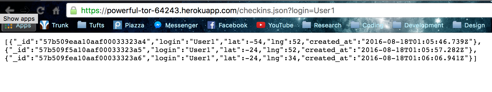
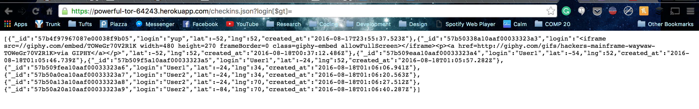

This report's purpose is to find security flaws in Ming's web application Not Foursquare. The purpose of this app is to store user locations associated with their login name as well as display these locations.
After recieving the server-vuln.js file, the site was set up at http://powerful-tor-64243.herokuapp.com/ Initial testing was done "black box", using only the access that a hacker would have. The source code was then examined for vulnerabilites and curl commands along with Burp Suite were used to carry out attacks.
The core of all the vulnerabilities found is trusting the user input. Input is intended to be text/numbers to be stored and queried as names and locations, but hackers have no contract to attempt to store and query text/numbers. Instead, an attacker has the ability to get and post harmful data to the server. This results in hackers being able to access data they shouldn't, the server to be spammed, and accessing data that is more precious than a location or login (see Cross-Site Scripting).
POST '/sendLocation', displaying GET '/'.
Harmful code can be embedded in a response, which has the ability to phish for account information, access browser history or clipboard contents, and get the user's cookies.
Input for the "login" field posted to 'sendLocation' is not validated. I was able to store html in the login field, and now whenever the home page is loaded that embedded html will show up (see below). In this example, it is just an embedded gif, but it could be a fake login and password for Bank of America or even a script that can execute unsuspecting of the user.
The input field for login must be corrected before storing to a document. The Validator package has a method escape which replaces special characters such as <,>&,/ with their html equivalents.
Fix:
login = request.body.login should be replaced with login = validator.escape(request.body.login)
The checkins.json endpoint should only query entries for a particular login name. However, a hacker can use injection to get all the entries in the data base. This is concerning since user's information should only be accessed by the user, especially if it is something private like location. This is especially bad considering that this technique would even bypass passwords if they were implemented in this application.
There is a special character in the MongoDB query language, which is $gt. The malicous request is of the form /checkins.json?login[$gt]=. JSON that looks like {"login": "$gt": undefined} will be sent to the server. Executing the find method, all login names will be compared to undefined and any non-empty string is greater than undefined. Therefore, all entries will be returned (except for those where login="").
What "User1" should be able to see vs. what a hacker can see:
The heart of this problem is that a JavaScript object is being used to query against. This should never be the case since the login field should only be a string. To avoid this injection problem call .toString on the request parameter before executing a mongo query.
example code:
loginEntry = request.body.login.toString()Locations can be posted and stored in the database programatically, filling the database with false/unecessary data.
There is the ability to post data to the database programatically. While users can also post false data, a program can seriously fill up the data base. For instance, a for loop set to run a billion times could be put around curl --data "login=User2&lat=-84&lng=70" https://powerful-tor-64243.herokuapp.com/sendLocation
The script that wreaked this havock can be found here
This would best be fixed with a login authentication system. This would slow down a bot from creating many posts through different accounts and depending on the login in system (using captcha) would prevent a bot from logging in in the first place. A stone age fix for this is to have an admin insert trusted login names to the database. From there, before a new entry for a login is created, it is queried to see if that login already exists in the database.
The moral of the story here is to NEVER trust user input. In the cases of XSS and injection, vulnerabilities can be avoided by always handling the parameters (stringify, escape, validate, etc.) in some way before using them. Other than that, a huge flaw in the application is the ability for anyone to access a user's data jsut by knowing their login name. To make this application more secure in the future, a password field should be introduced along with verifying the user is a human when created an account (to prevent spam).
{kind=link}
{kind=link}
{kind=link}
{kind=link}